Rule v1.055 (b) (you approved A, “Print receipt whenever money still stands”): a removed student or a cancelled private testing with a payment that still stands gets Print receipt in its ⋯, first, in its own group above Restore (§8’s one order: money before taking someone off). Never with nothing paid (Leo Hart, withdrawn without paying, keeps today’s menu); never while Hide private details is on. The receipt itself is the one the active rows print, with that payment. Admin pictures below; the one open question (staff) is under them. (Preview screenshots, fake data; the After column is drawn on top of the real page.)
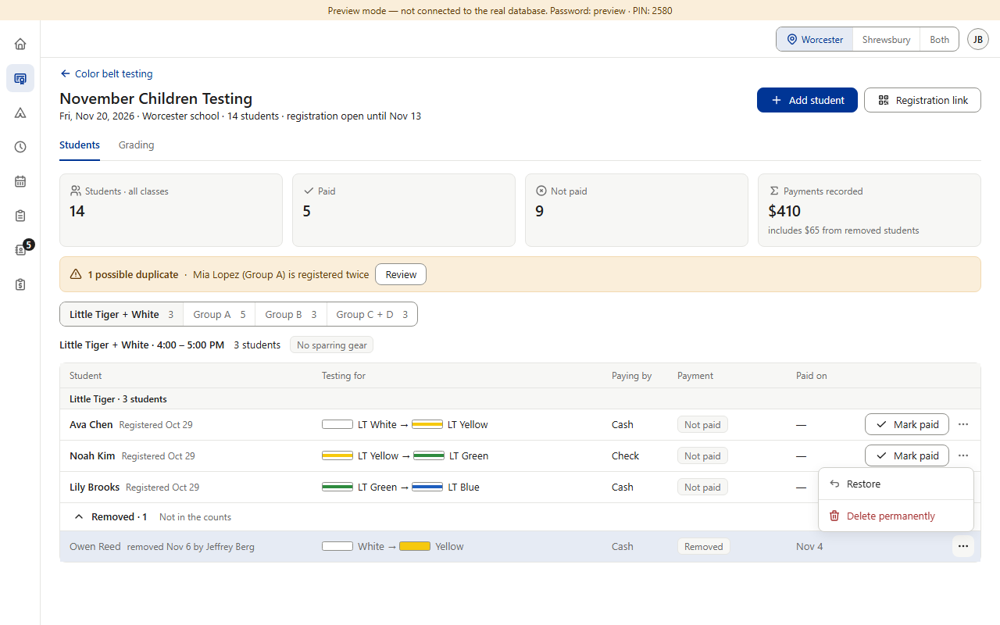
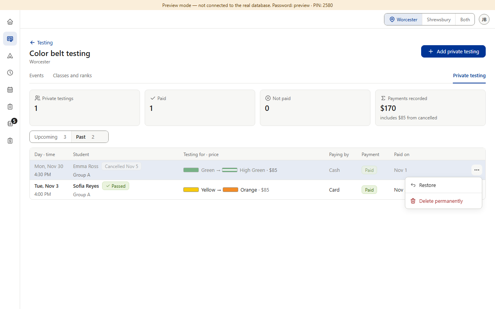
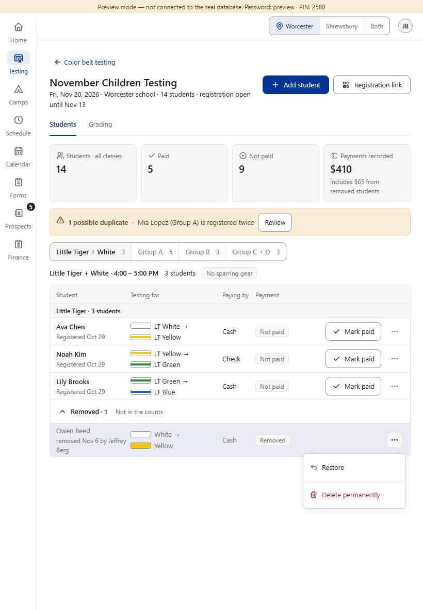
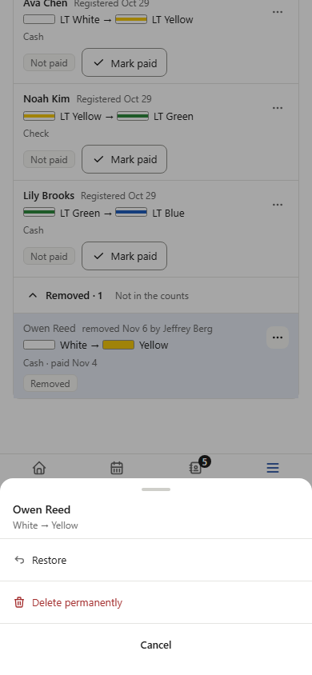
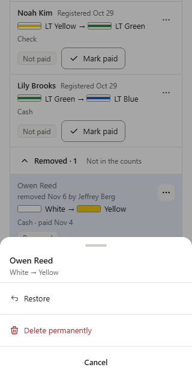
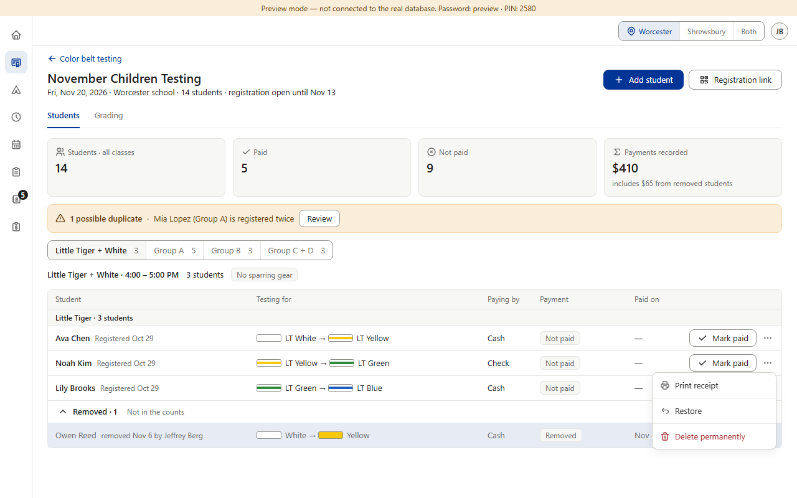
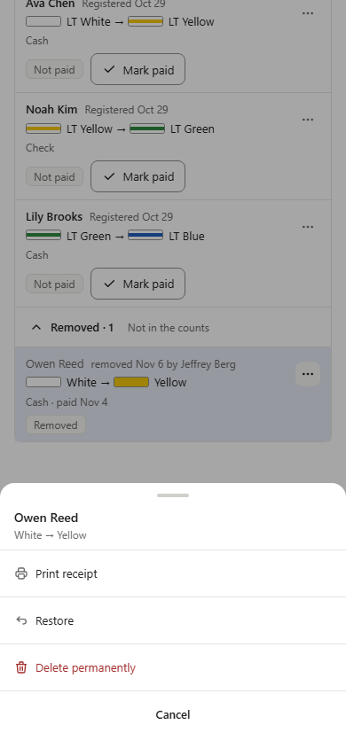
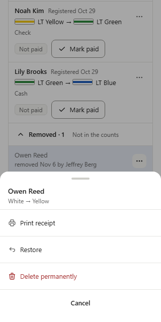
On an active row with money, staff and admins both get Print receipt (CB2, v0.420). On a removed student or a cancelled private testing, staff see no ⋯ at all today, because Restore and Delete permanently are for admins. Rule v1.055 (b) says the receipt is offered whenever money still stands, but not to whom. Star and Camps will meet the same question when they add it (their staff also see no ⋯ on removed rows).
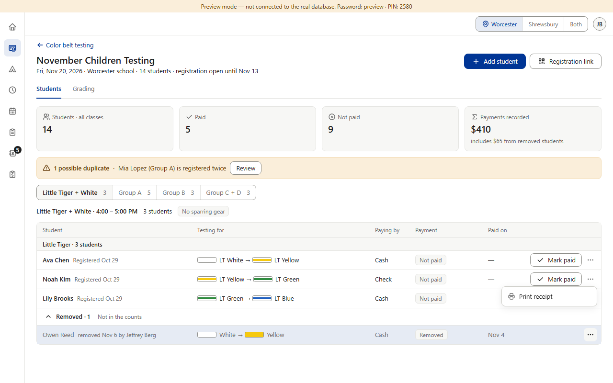
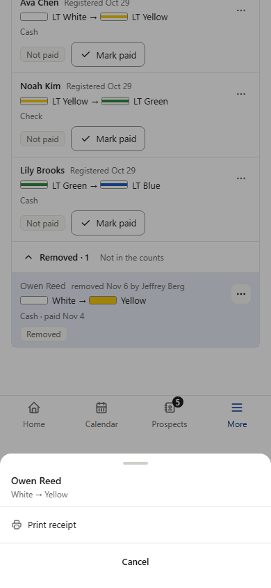
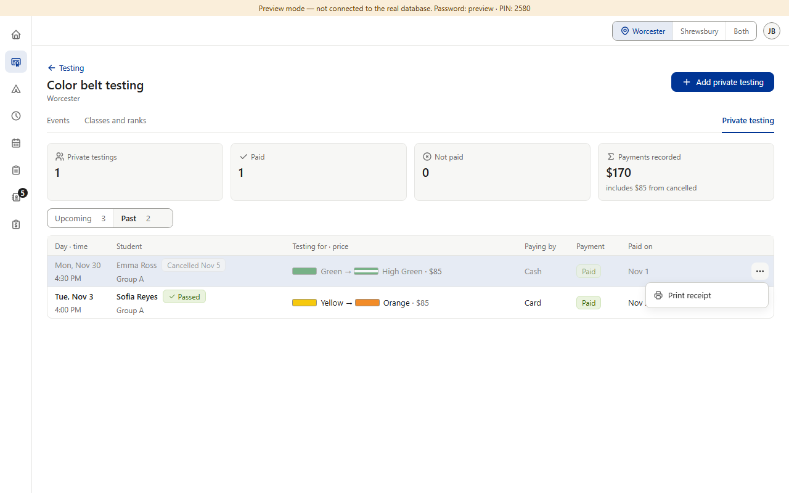
What it does: Staff get a ⋯ on a removed or cancelled row that has money, holding only Print receipt. Admins get Print receipt · line · Restore · line · Delete permanently. With nothing paid, staff still see no ⋯ there.
+ The person at the desk when a parent asks for a receipt is usually staff, and the same staff can already print one for the same family while the row is active. The same rule everywhere: whoever can print a receipt for a payment can print it for that payment.
− Staff now see a ⋯ on some removed rows (the ones with money), so the Removed list looks a little busier for staff.
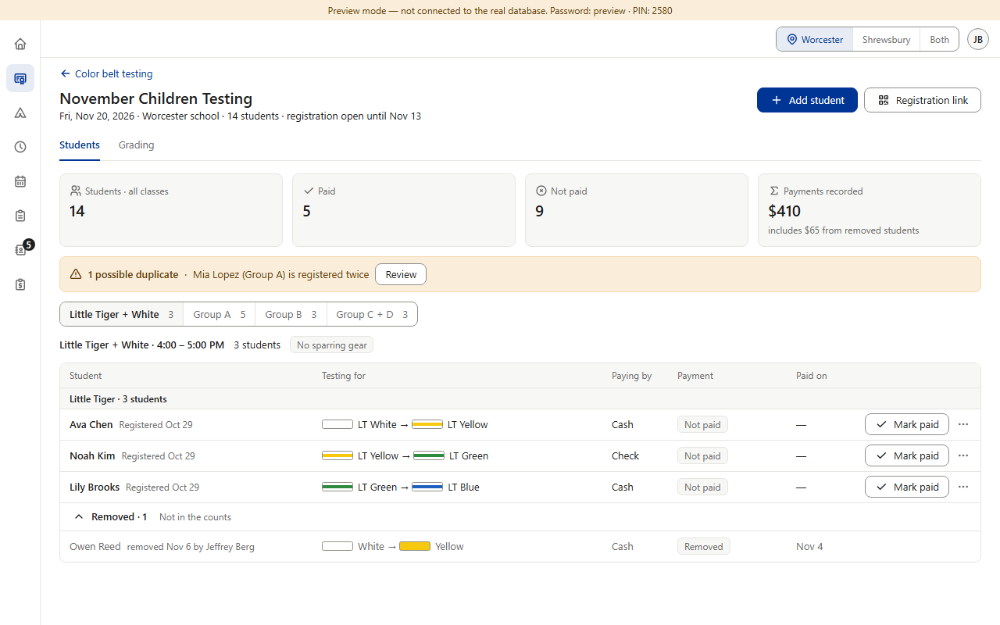
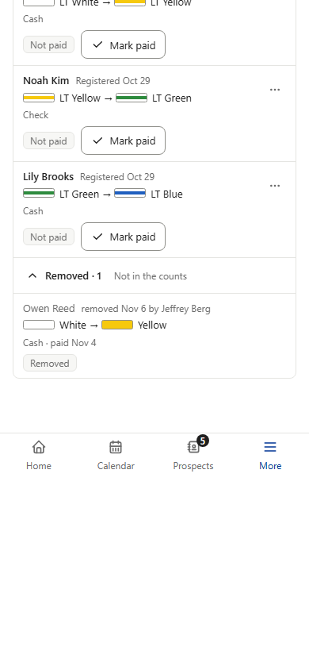
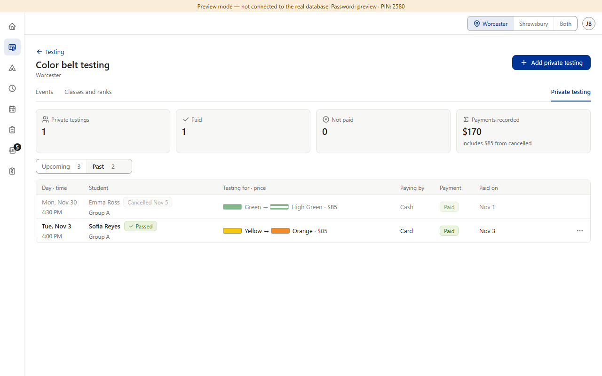
What it does: Only admins get Print receipt on removed or cancelled rows; staff see these rows as today.
+ Nothing changes for staff; the Removed list stays as it is.
− A staff member at the desk has to find an admin to print a receipt for a withdrawn student's payment, though they could print it a day earlier while the student was active. Two rules for the same receipt.
Answer: A or B.